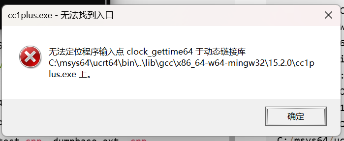
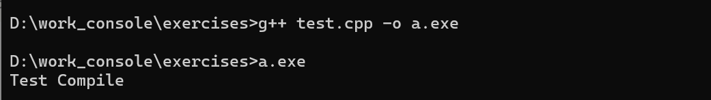

日常bug解决
windows环境下g++无输出的解决方案
1
| PS D:\work_console\exercises> g++ test.cpp -o test.exe
|
无任何输出
重装、重新配置环境变量无任何效果
添加-v参数后信息为
1
2
3
4
5
6
7
8
9
10
11
| test.cpp -o test.exe -v
Using built-in specs.
COLLECT_GCC=C:\msys64\ucrt64\bin\g++.exe
COLLECT_LTO_WRAPPER=C:/msys64/ucrt64/bin/../lib/gcc/x86_64-w64-mingw32/15.2.0/lto-wrapper.exe
Target: x86_64-w64-mingw32
Configured with: ../gcc-15.2.0/configure --prefix=/ucrt64 --with-local-prefix=/ucrt64/local --with-native-system-header-dir=/ucrt64/include --libexecdir=/ucrt64/lib --enable-bootstrap --enable-checking=release --with-arch=nocona --with-tune=generic --enable-mingw-wildcard --enable-languages=c,lto,c++,fortran,ada,objc,obj-c++,jit --enable-shared --enable-static --enable-libatomic --enable-threads=posix --enable-graphite --enable-fully-dynamic-string --enable-libstdcxx-backtrace=yes --enable-libstdcxx-filesystem-ts --enable-libstdcxx-time --disable-libstdcxx-pch --enable-lto --enable-libgomp --disable-libssp --disable-multilib --disable-rpath --disable-win32-registry --disable-nls --disable-werror --disable-symvers --with-libiconv --with-system-zlib --with-gmp=/ucrt64 --with-mpfr=/ucrt64 --with-mpc=/ucrt64 --with-isl=/ucrt64 --with-pkgversion='Rev8, Built by MSYS2 project' --with-bugurl=https://github.com/msys2/MINGW-packages/issues --with-gnu-as --with-gnu-ld --with-libstdcxx-zoneinfo=yes --disable-libstdcxx-debug --enable-plugin --with-boot-ldflags=-static-libstdc++ --with-stage1-ldflags=-static-libstdc++
Thread model: posix
Supported LTO compression algorithms: zlib zstd
gcc version 15.2.0 (Rev8, Built by MSYS2 project)
COLLECT_GCC_OPTIONS='-o' 'test.exe' '-v' '-shared-libgcc' '-mtune=generic' '-march=nocona'
C:/msys64/ucrt64/bin/../lib/gcc/x86_64-w64-mingw32/15.2.0/cc1plus.exe -quiet -v -iprefix C:/msys64/ucrt64/bin/../lib/gcc/x86_64-w64-mingw32/15.2.0/ -D_REENTRANT test.cpp -quiet -dumpbase test.cpp -dumpbase-ext .cpp -mtune=generic -march=nocona -version -o C:\Users\HUNTER~1\AppData\Local\Temp\cc9zq81P.s
|
解决方法
powershell里面弹不出来一个报错信息，cmd才可以
从cmd窗口执行c++能够看到

编译器前端组件cc1.exe/cc1plus.exe在运行时加载了错误版本的libwinpthread-1.dll动态链接库。clock_gettime64是近期在mingw-w64运行时库中新引入的API函数。
解决方法1：
直接从C:\msys64\ucrt64\bin中复制libwinpthread-1.dll到工程目录下，然后该工程就可以编译了

解决方法2：
直接从C:\msys64\ucrt64\bin中复制libwinpthread-1.dll到C:\Windows\System32中，则全局的工程都可以编译
github代理问题
OpenSSL SSL_connect: SSL_ERROR_SYSCALL in connection to github.com:443
设置代理端口
windows打开设置，代理服务器，查看使用的端口，一般是7890或10809，然后设置端口即可
git config --global http.https://github.com.proxy http://127.0.0.1:7890
git config --global https.https://github.com.proxy https://127.0.0.1:7890
我的mac设置的是
1
2
3
4
| kzz6991@SurfaceAir PaiPai121.io % git config --global --get http.proxy
http://127.0.0.1:2081
kzz6991@SurfaceAir PaiPai121.io % git config --global --get https.proxy
http://127.0.0.1:2081
|
如果要去除：
1
2
| git config --global --unset http.proxy
git config --global --unset https.proxy
|
配置ssh免密登录
查看是否已经存在密钥
1
| ls $env:USERPROFILE\.ssh\id_rsa.pub
|
如不存在，则创建
1
| ssh-keygen -t rsa -b 4096
|
读取本地公钥 -> 登录服务器 -> 创建.ssh目录 -> 把公钥追加写入授权文件
1
| type $env:USERPROFILE\.ssh\id_rsa.pub | ssh root@148.135.91.160 "mkdir -p ~/.ssh && cat >> ~/.ssh/authorized_keys"
|
配置WSL代理
1
2
3
4
5
6
7
8
9
| [wsl2]
# 开启镜像网络模式
networkingMode=mirrored
# 自动代理（让 WSL 自动识别 Windows 代理）
autoProxy=true
# 允许从宿主机访问 WSL
localhostForwarding=true
# 限制内存占用（防止 Dify 跑起来后把 Windows 撑爆，建议根据你总内存调整）
memory=8GB
|
配置Docker镜像源
1
| sudo nano /etc/docker/daemon.json
|
1
2
3
4
5
6
7
8
| {
"registry-mirrors": [
"https://docker.xuanyuan.me",
"https://docker.m.daocloud.io",
"https://docker.1ms.run",
"https://hub.rat.dev"
]
}
|
1
2
| sudo systemctl daemon-reload
sudo systemctl restart docker
|